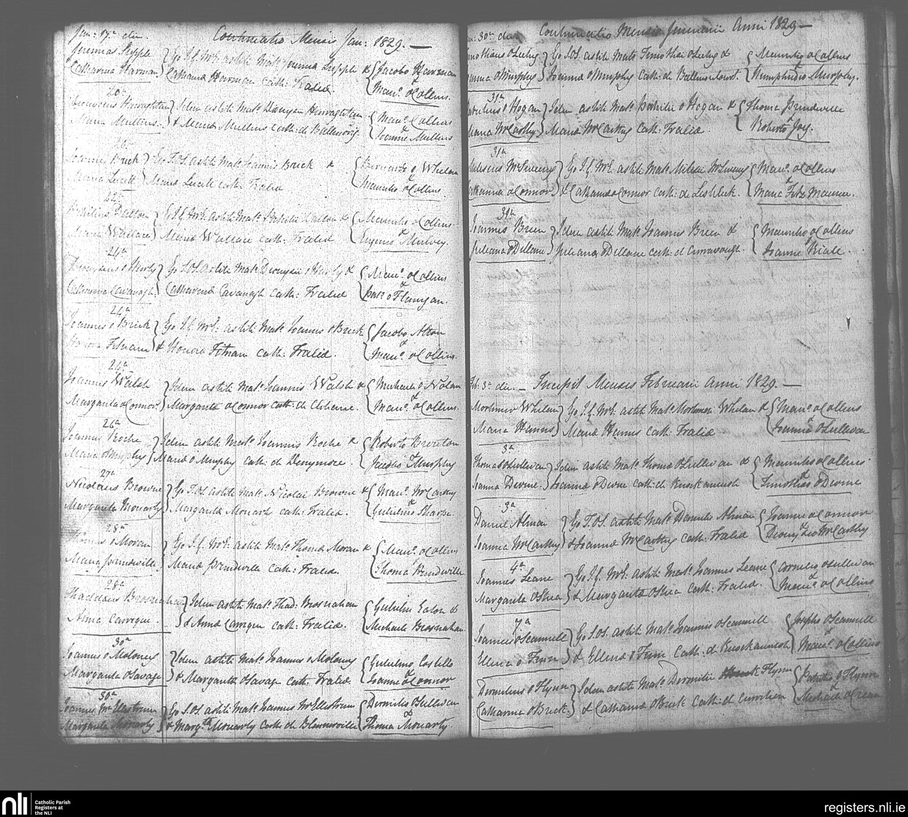
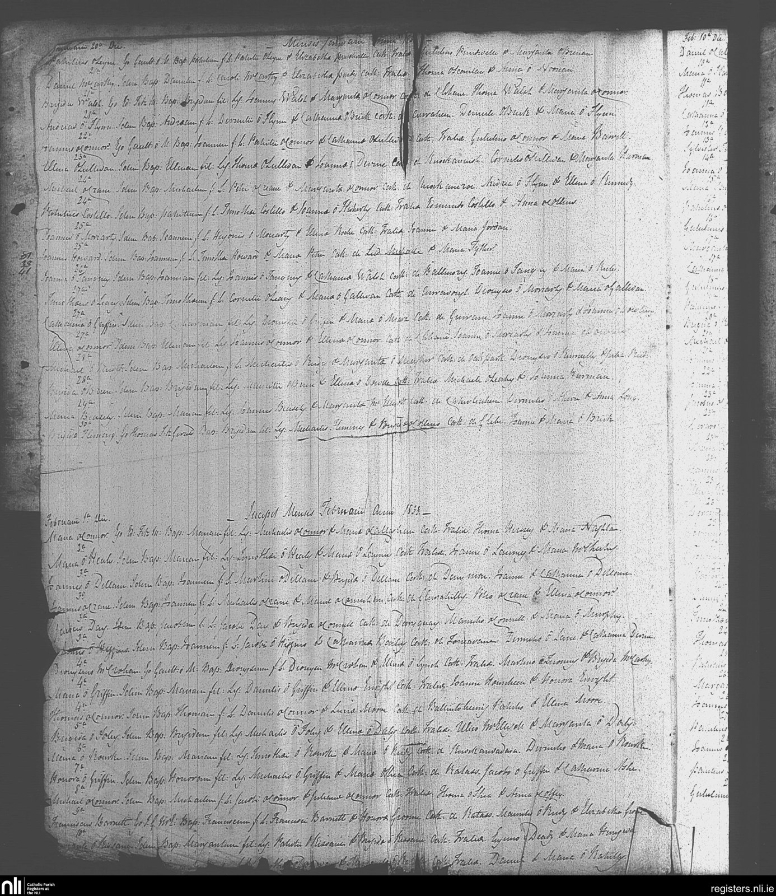
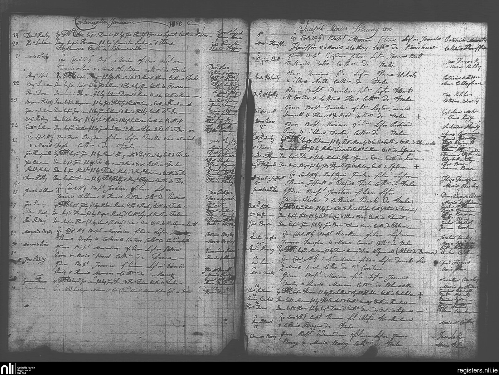
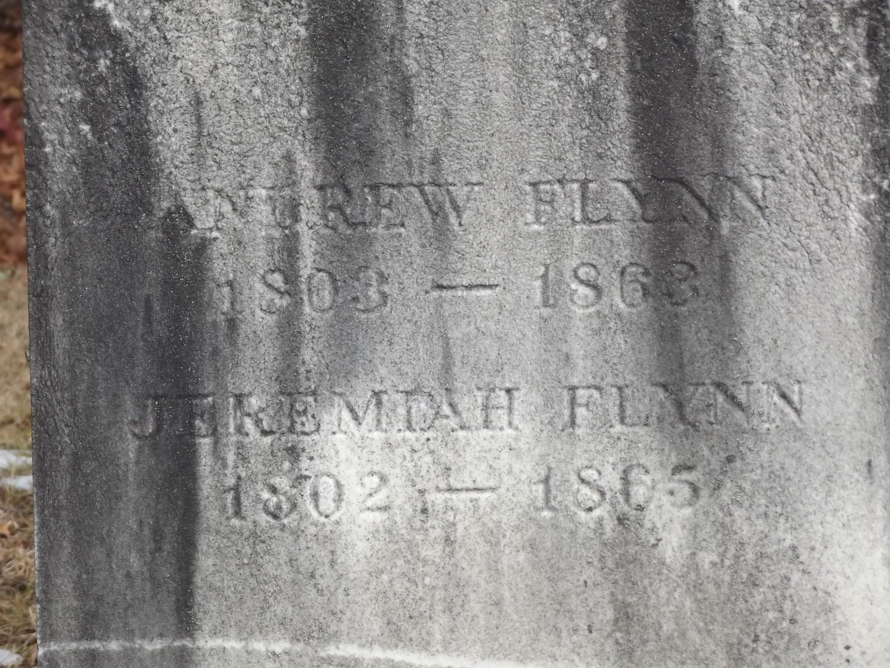
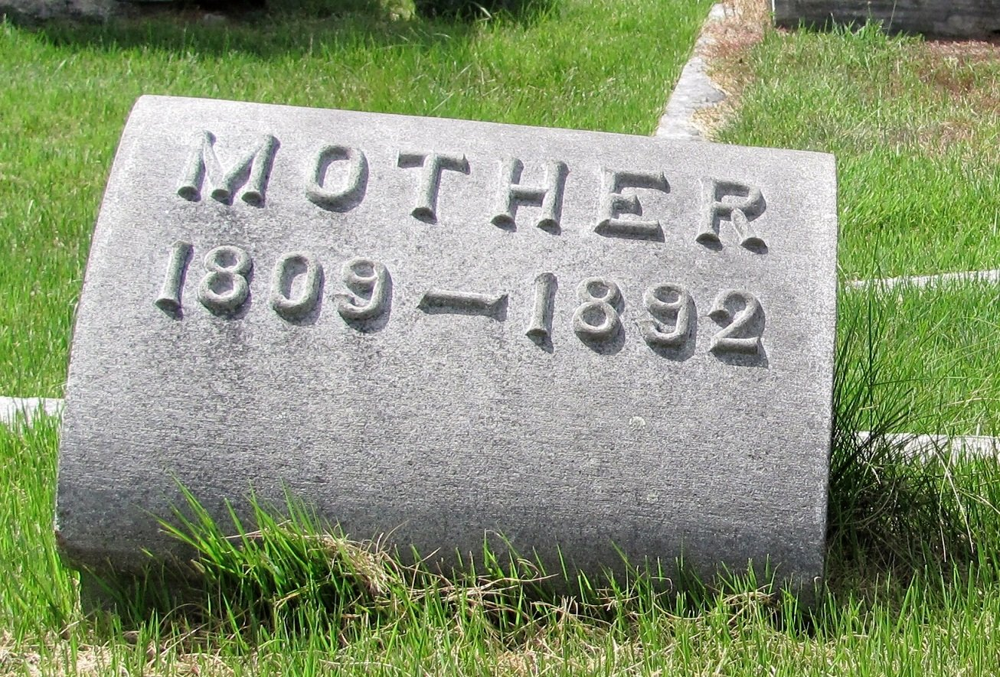
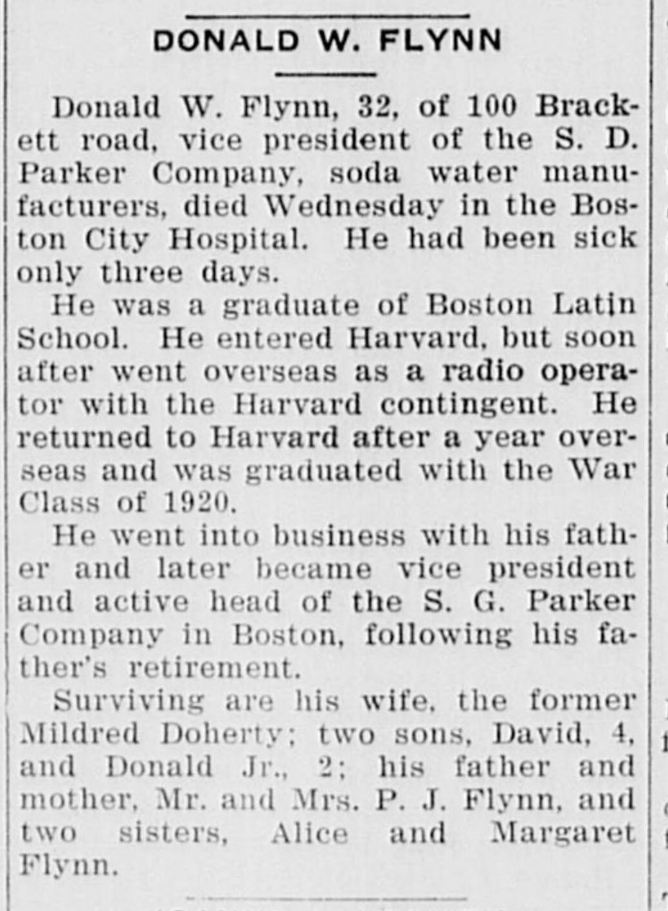

<meta charset="utf-8">
<meta name="viewport" content="width=device-width, initial-scale=1">
<meta name="robots" content="noindex">
<title>Flynn: Kerry to Boston</title>
<link rel="stylesheet" href="style.css">

<nav>
  <a href="index.html">Home</a>
  <a href="quintanilla.html">Quintanilla</a>
  <a href="martinez.html">Martinez</a>
  <a class="here" href="flynn.html">Flynn</a>
  <a href="maccoll.html">MacColl</a>
</nav>

<main>
<h1>Flynn</h1>
<p class="sub">My father's father's line. Famine Irish out of County Kerry, and the classic three-generation American climb, with a hard stop in October 1931.</p>

<h2>The boat</h2>
<p>In the late 1840s the potato crop failed in Ireland, several years running. Potatoes were most of what poor Irish families ate. About a million people starved and another million-plus got on boats. <strong>Andrew Flynn</strong> was one of them, and we now know exactly where he came from. He arrived in America in <strong>1850</strong>, the peak of the flight, his arrival year recorded in the 1900 census <span class="badge proven">Proven</span>. He was a teenager, born and baptized in <strong>Curraheen, a townland just outside Tralee, County Kerry</strong>.</p>

<p>His parents were <strong>Jeremiah Flynn and Catherine Brick</strong>. For years the family record said those two married in Cambridge, Massachusetts in 1841. That was wrong, and now provably so. They married in Ireland, in the Tralee Catholic parish, on <strong>February 7, 1829</strong> <span class="badge proven">Proven</span>. The "Cambridge 1841" entry was a database mix-up, two common Irish names pinned to the wrong couple. Here is the actual register page, the marriage of "Dermot O'Flynn and Catherine O'Brick of Curriheen," witnesses Patrick O'Flynn and Michael O'Crean. Dermot is just the Irish form of Jeremiah.</p>

<figure>
  
  <figcaption>Tralee parish marriage register, February 1829. The last entry in the right-hand column, dated the 7th, is Dermot (Jeremiah) O'Flynn and Catherine O'Brick of Curriheen. National Library of Ireland, microfilm 04270/05.</figcaption>
</figure>

<p>Then Andrew himself, baptized in the same parish on <strong>January 21, 1833</strong>: "Andrew, son of Dermot O'Flynn and Catherine O'Brick, of Curraheen" <span class="badge proven">Proven</span>. That is the immigrant's own baptism, and it even corrects his birth year, 1833, not the 1834 the American census later guessed.</p>

<figure>
  
  <figcaption>Tralee parish baptism register, January 1833. In the left column, under the entries for the 21st, "Andreas O'Flynn... Andraeam, son of Dermot O'Flynn and Catherine O'Brick, of Curraheen." National Library of Ireland, microfilm 04269/04.</figcaption>
</figure>

<p>Andrew wasn't an only child, either. The same register has his sister <strong>Joanna, baptized in Curraheen on April 23, 1838</strong>, same parents <span class="badge proven">Proven</span>, with a Daniel Almon standing as godfather, a name worth holding onto for a second.</p>

<p>So the question that had only ever had a vague answer, "somewhere in Ireland," now has a precise one: <strong>Curraheen, parish of Tralee, County Kerry.</strong> Catherine's maiden name, Brick, a distinctly Kerry surname, had always been the clue, and it pointed true. The 1852 Griffith's Valuation, the great property survey of Ireland, lists a Jeremiah Flynn holding land at Curraheen <span class="badge proven">Proven</span>, right where the church records put the family.</p>

<h2>One more rung: Michael Flynn</h2>
<p>The family tree had always claimed one ancestor above Jeremiah, a <strong>Michael Flynn born around 1785</strong>, with nothing behind the name. The Tralee register produced the record. On <strong>February 4, 1806</strong>, the same parish baptized "Dermot, son of <strong>Michael Flynn and Johanna Crean</strong>, of Lied" <span class="badge probable">Probable</span>. Dermot is the Irish for Jeremiah; the age fits; the parish is the same; and a Crean stood as a witness at Jeremiah's 1829 wedding, exactly the kind of thread that binds these families. So this is very probably Jeremiah's own baptism, which turns Michael Flynn and Johanna Crean from a bare tree entry into real people with a real record, born in the 1780s. The oldest names in the line, on the actual page.</p>

<figure>
  
  <figcaption>Tralee parish baptism register, February 1806. Near the foot of the right-hand column, dated the 4th, "Dermot, son of Michael Flynn and Johanna Crean, of Lied," sponsors Francis Fitzmaurice and Elizabeth Flynn. National Library of Ireland, microfilm 04269/02.</figcaption>
</figure>

<p>These three pages are the real thing, the original parish books, not somebody's typed summary. AI found the leads; then the actual register scans were read line by line to confirm every name before any of it went here.</p>

<h2>Massachusetts</h2>
<p>The family settled in Shirley and Ayer, small Massachusetts mill towns, and they're all still there in St. Mary's Cemetery in Ayer. Andrew, died 1911, his stone reading "Son of Jeremiah Flynn and Catherine (Brick) Flynn." Catherine Brick, 1809-1892. A Jeremiah Flynn who served in the Civil War with the 2nd Massachusetts Heavy Artillery. And an older shared stone reading "Andrew Flynn 1803-1863 / Jeremiah Flynn 1802-1865," the elder Flynn generation. That older Andrew is very likely the grown <strong>Andrew O'Flynn of Curraheen who married Joanna Almon there in 1835</strong> <span class="badge probable">Probable</span>, a relative of Jeremiah's rather than the baby Andrew who sailed to America. (Remember the Almon godfather at sister Joanna's baptism; these Curraheen families married and stood godparent for each other constantly.) The exact kinship is still being sorted, but the Irish records now give us the whole neighborhood, not just one man.</p>

<figure>
  
  <figcaption>The shared stone at St. Mary's, Ayer: Andrew Flynn 1803-1863 and Jeremiah Flynn 1802-1865, weathered almost past reading.</figcaption>
</figure>
<figure>
  
  <figcaption>Catherine (Brick) Flynn's footstone, "MOTHER 1809-1892." Born in Kerry around 1809, died in Massachusetts having outlived her husband by decades.</figcaption>
</figure>

<h2>The climb</h2>
<p>Andrew's son <strong>Patrick John Flynn</strong>, born 1859 in Shirley <span class="badge proven">Proven</span>, made the move that changed the family: off the farm, into Boston, into business. He married Mary Gertrude White in Boston in 1892 and rose to run the <strong>S. D. Parker Company, soda water manufacturers</strong>, the family firm he headed until retirement. When he died in February 1936 the Boston Herald ran his obituary: born Shirley, resident of Newton Center, occupation soda water. A famine refugee's son, retired company president in the suburbs.</p>

<p>Patrick's son <strong>Donald White Flynn</strong>, born in Revere in 1898, was the payoff generation <span class="badge proven">Proven</span>. Boston Latin School, the best public school in the country. Harvard, interrupted by World War I, he went overseas as a radio operator with the Harvard contingent, came back, and graduated with the war class of 1920. He joined his father's company and became vice president and its active head. He married Mildred Dorrety in 1925 and they had two boys, David and Donald Jr.</p>

<h2>One week in October 1931</h2>
<p>Then it stops. The Newton Graphic of Friday, October 23, 1931:</p>

<blockquote>
<p>Donald W. Flynn, 32, of 100 Brackett road, vice president of the S. D. Parker Company, soda water manufacturers, died Wednesday in the Boston City Hospital. He had been sick only three days.</p>
<p>Surviving are his wife, the former Mildred Doherty; two sons, David, 4, and Donald Jr., 2; his father and mother, Mr. and Mrs. P. J. Flynn, and two sisters, Alice and Margaret Flynn.</p>
</blockquote>

<figure>
  
  <figcaption>The Newton Graphic, October 23, 1931. Found by AI in a digitized newspaper archive no one in the family knew existed. The paper misspelled Mildred's maiden name and shaved a year off his age; he was 33. <a href="documents/flynn-1931-obit.jpg">Full page here.</a></figcaption>
</figure>

<p>Sick three days, dead at 33, cause not stated, some fast acute illness in the era just before antibiotics. His death certificate sits at the Massachusetts State Archives and is on the order list. His son <strong>Donald White Flynn Jr.</strong>, my grandfather, was two years old. He grew up without his father, was raised around his mother's Dorrety family, married Joan MacColl in 1953, moved to East Greenwich, Rhode Island, and then history repeated in the worst way: he died January 7, 1973, at just 42, when my own father was a teenager <span class="badge proven">Proven</span>. He's buried at Glenwood Cemetery in East Greenwich. Two Donalds in a row, both dead young, which is why almost nothing about the earlier Flynns survived in family memory. Nobody was left to do the telling.</p>

<p>That's what this page is for. Four Donald Flynns in a row now, and the story is back.</p>

<h2>The paper trail</h2>
<ul class="docs">
  <li><a href="documents/flynn-1931-obit.jpg">Newton Graphic, October 23, 1931, full page</a><span class="doc-what">The obituary above, in place on page eight, between the Halloween ice cream ad and the legal notices. Free on archive.org.</span></li>
  <li><a href="https://www.familysearch.org/ark:/61903/1:1:M9T6-CT6">Andrew Flynn, 1900 census, Shirley, Mass.</a><span class="doc-what">Born Ireland, arrival year 1850. The famine boat, in a census column.</span></li>
  <li><a href="https://www.findagrave.com/memorial/158295018/andrew-flynn">Andrew Flynn's grave, St. Mary's Cemetery, Ayer</a><span class="doc-what">"Son of Jeremiah Flynn and Catherine (Brick) Flynn." The Irish parents, carved in stone.</span></li>
  <li><a href="https://www.findagrave.com/memorial/107025107/catharine-flynn">Catherine (Brick) Flynn, 1809-1892</a><span class="doc-what">My 4th-great-grandmother, the Kerry clue. Three photos of her stone.</span></li>
  <li><a href="https://www.irishgenealogy.ie/view/?record_id=f67e8588e4-31589">1829 marriage, Tralee: Dermot O'Flynn and Catherine O'Brick of Curriheen</a><span class="doc-what">Official parish transcription, confirmed against the actual register scan above. Witnesses Patrick O'Flynn and Michael O'Crean. This is what corrects the old "Cambridge 1841" error.</span></li>
  <li><a href="https://www.irishgenealogy.ie/view/?record_id=95c501c4bd-7728">1833 baptism, Tralee: Andrew, son of Dermot O'Flynn and Catherine O'Brick, Curraheen</a><span class="doc-what">The immigrant's own baptism, January 21, 1833. Parents match his 1911 Massachusetts death record exactly.</span></li>
  <li><a href="https://www.irishgenealogy.ie/view/?record_id=68d5d71735-50719">1806 baptism, Tralee: Dermot, son of Michael Flynn and Johanna Crean, of Lied</a><span class="doc-what">Very probably Jeremiah's own baptism, and the one record behind the "Michael Flynn ~1785" tree claim.</span></li>
  <li><a href="https://www.irishgenealogy.ie/view/?record_id=95c501c4bd-11021">1838 baptism, Tralee: Joanna, daughter of Jeremiah O'Flynn and Catherine Brick, Curriheen</a><span class="doc-what">Andrew's sister, April 23, 1838. Godfather Daniel Almon, the Almon-Flynn tie that runs through the neighborhood.</span></li>
  <li><a href="https://www.irishgenealogy.ie/view/?record_id=f67e8588e4-32470">1835 marriage, Tralee: Andrew O'Flynn and Joanna Almon, both of Curraheen</a><span class="doc-what">The grown Andrew of Curraheen, the probable "Andrew Flynn 1803-1863" on the Ayer stone. Parents not named, so his exact kinship to Jeremiah is inference.</span></li>
  <li><a href="http://www.failteromhat.com/griffiths/kerry/annagh.php">Griffith's Valuation, 1852, Annagh parish</a><span class="doc-what">Lists Jeremiah Flynn holding land at Curraheen, right where the church records put the family. (Two Jeremiah Flynns appear in the parish, so it corroborates rather than uniquely pins.)</span></li>
  <li><a href="https://www.familysearch.org/ark:/61903/1:1:Q53X-SD95">Patrick J. Flynn obituary index, Boston Herald, Feb 1936</a><span class="doc-what">Born Shirley, Newton Center, "Soda Water Manufacturers." Ties the family firm together. (A stray index puts his death in Tallahassee, Florida; that is unconfirmed, the February 1936 Newton Graphic does not carry his obituary.)</span></li>
  <li><a href="https://ancestors.familysearch.org/en/KF83-2Y2/donald-white-flynn-jr.-1930-1973">Donald White Flynn Jr., 1930-1973</a><span class="doc-what">My grandfather. Seven attached records including the 1973 Providence Journal obituary, next on the pull list.</span></li>
</ul>

<h2>Still hunting</h2>
<p>The 1931 death certificate, for the cause of Donald Sr.'s death. The 1973 Providence Journal obituary of my grandfather. Andrew's 1866 naturalization file. The Kerry Tithe Applotment Books, to try to place Michael Flynn's generation at Curraheen in the 1820s. And where Patrick actually died in 1936, home near Boston or Florida.</p>

<div class="footer"><p><a href="index.html">Back to all four lines</a></p></div>
</main>
